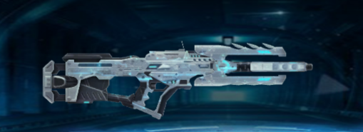

形随战局
以形态切换连接不同战斗节奏，在变化中保有熟悉的操控感。

冷白装甲，冰蓝流光。
在步枪与狙击之间，自由切换。
造型与材质 双形态变换 骨骼与动作
正在载入三维模型 ...
01 / DESIGN & MATERIALS
Design & materials
冷白装甲勾勒轮廓，深色机身承托蓝色流光。让每一道切面，在光线中显露。
几何切面 冷白装甲 冰蓝流光
02 / EXPLODED VIEW
Every part has its place.
枪管前移，装甲打开，组件逐层分离。随滚动绕行观察，再看每个部件回到原位。
慢慢下滑，观察从整体到部件的变化。
分离部件 旋转观察 精准归位
03 / TRANSFORMATION
One weapon. Two forms.
从紧凑的步枪姿态，到舒展的狙击轮廓。枪身展开、组件位移，变形发生在你向下滚动的每一刻。
继续下滑展开，向上回滚收拢。
组件展开 枪管延展 双向切换
04 / ANATOMY
Beneath the surface
18 根骨骼联动，让枪身的每次开合都有迹可循。透过表面，观察关节、层级与机械结构如何协同运动。
18 根骨骼 层级联动 实时透视
05 / IN MOTIONINTERACTIVE SHOWROOM
转动视角，切换形态。
把熟悉的武器，握在自己的节奏里。
展开组合 形态切换 骨骼 旋转观察
展开组合为部件结构演示；变形与换弹使用原有武器骨骼动作。展示不包含角色手臂，光效为网页重现。
06 / IN THE GAME来自特战英雄
记忆里的蓝色流光，
以及随时切换战斗节奏的自由。
LEGENDARY / 传说级
游戏中按 V 切换武器形态。从连续输出到精准瞄准，让同一把武器回应不同的交战距离。
参数摘自随项目保存的游戏图鉴，仅对应截图中的形态。
以形态切换连接不同战斗节奏，在变化中保有熟悉的操控感。
展开、收拢、换弹。细致的部件运动，让每次操作都有清晰反馈。
蓝色能量沿枪身流转，为冷白装甲留下鲜明的视觉标记。
THE FORM CHANGES. THE SPIRIT REMAINS.